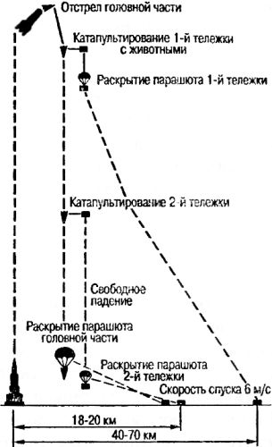

Первыми были собаки
Помимо изучения высших слоев атмосферы запуски геофизических ракет преследовали еще одну важную цель. Все, кто работал под началом Королева, прекрасно понимали, что раньше или позже на ракете полетит человек, к этому следовало готовиться, а значит, нужно было установить, какие меры следует предпринять для того, чтобы живой организм смог существовать там, где нет никакой жизни.
О необходимости таких исследований писал еще Константин Циолковский. Более того, он был, по-видимому, первым ученым, который собственноручно подготовил и провел медико-биологический эксперимент, призванный выяснить жизнестойкость организма, испытывающего сильнейшую перегрузку. В одном из своих трудов Циолковский пишет об этом так:
«Я еще давно делал опыты с разными животными, подвергая их действию усиленной тяжести на особых центробежных машинах. Ни одно живое существо мне убить не удалось, да я и не имел этой цели, но только думал, что это могло случиться. Помнится, вес рыжего таракана, извлеченного из кухни, я увеличивал в 300 раз, а вес цыпленка раз в 10; я не заметил тогда, чтобы опыт принес им какой-нибудь вред».
Эти опыты Циолковский проводил в 1879 году. Минует 70 лет, и советские ученые инициируют свою собственную программу медико-биологических исследований на высотных геофизических ракетах.
Успешные запуски ракеты «В-1А» и первые геофизические эксперименты послужили базой для подготовки такой программы в интересах Академии наук СССР и разработки модификаций ракеты «Р-1», специально предназначенных для этой цели: «В-1Б», «В-1В», «В-1Д» и «В-1Е».
Работы по использованию высотных геофизических ракет для научных исследований поручили инженеру-механику и артиллеристу Анатолию Александровичу Благонравову. Возглавляемая им комиссия по изучению верхних слоев атмосферы при Президиуме АН СССР сформулировала задание на проектирование и изготовление ракет для высотных исследований, а также необходимых видов научной аппаратуры. Планированием экспериментов по запуску животных на борту высотных геофизических ракет, а также вопросами соответствующей подготовки животных к этим экспериментам занимались ученые-медики под руководством Владимира Яздовского.
По рекомендации академиков В. Черниговского и В. Ларина для проведения экспериментов в качестве биологических объектов были взяты беспородные собаки, поскольку эти животные отличаются большой устойчивостью к вредным влияниям внешней среды. Но даже эти стойкие к невзгодам дворняги не совсем устраивали ученых. В частности, понадобилось хирургическим вмешательством «модифицировать» отобранных собак. Так, для определения величины артериального давления проводилась операция по выведению сонной артерии в кожный лоскут. Для регистрации биотоков сердца (электрокардиограммы) под кожу вживлялись танталовые электроды.
Перед полетом животные тренировались в скафандрах и на катапультных тележках, на вибростендах и герметических кабинах ракет, установленных в ОКБ Королева. После окончания тренировок собак отправляли в Капустин Яр.
Первая геофизическая ракета «В-1В» с животными на борту была запущена в 1951 году на высоту 101 километр. Вот как вспоминает об этом событии академик Благонравов:
«…Вырывается пламя, оглушительный рев двигателя, тучи пыли поднимаются с площадки, медленно начинает подъем ракета, выбрасывая мощный факел пламени. Вот уже ракета сверкает в лучах Солнца, затем быстро уменьшается на наших глазах, превращаясь, наконец, в точку. Мы уже не видим ракеты. Напряжение возрастает. «Вижу!» — раздается крик какого-то наблюдателя. Глаза различают продолговатый предмет, стремительно опускающийся на Землю в 4–5 км от нас. Яркая вспышка. Это упал корпус ракеты и взорвались остатки горючего. «Идет, идет!» — крикнул кто-то. Действительно, в небе появилась белая точка: это раскрывается парашют, несущий головку ракеты. Руководитель эксперимента с животными В. И. Яздовский стремглав бросается к автомашине, и вот она уже устремляется по направлению к приземлившейся головке ракеты. <…>
И вот мы видим, как головка ракеты коснулась Земли, опрокинулась набок, как спадает парашют, молниеносно отвинчиваются болты люка кабины; сначала извлекается собачка по кличке Дезик, затем Цыган. Дезик в полном здравии и благополучии. Цыган немного пострадал: при ударе головки ракеты во время приземления погнулся край лотка и слегка повредил ему кожу на брюхе. В тот период космические исследования в печати еще широко не освещались. Поэтому имена первых животных-космонавтов не были известны…»
У животных во время полета на геофизической ракете регистрировали пульс, кровяное давление, дыхание, снимали электрокардиограмму. Непрерывно в течение всего полета проводилась киносъемка собак.
В ходе первой серии полетов (ракеты «В-1 В») собаки запускались в герметической кабине на высоту 100 километров и более. При этом максимальная скорость полета составляла 4212 км/ч, перегрузки не превышали 5,5 g. На 188-й секунде полета происходило отделение головной части ракеты от ее корпуса, после чего с высоты в 6–8 километров животные на парашюте спускались на Землю.
Во второй серии (ракеты «В-1 Д») собаки совершали полет в вентиляционном скафандре, который укреплялся на выдвижном лотке и вставлялся во внутреннюю часть специально сконструированной тележки. При помощи этой тележки обеспечивалось катапультирование животных из кабины ракеты с применением парашютной системы. В отсеке головной части ракеты размещалось по две катапультируемые тележки. Ракеты совершали полет до высоты 110 километров. На высоте 75–86 километров при скорости 565–728 м/с происходило катапультирование животного, находящегося на правой тележке, а на высоте 39–46 километров при скорости 1020–1150 м/с — катапультирование животного на левой тележке. На активном участке траектории ракеты поперечная перегрузка не превышала 5 g, а при вхождении в плотные слои атмосферы наблюдалось ее уменьшение до 1–1,2 g. Действие невесомости продолжалось около 3,7 минуты.
В этой серии экспериментов удалось доказать, что в аварийной ситуации на этих высотах катапультирование и спуск на парашюте являются надежным средством покидания ракеты. В случае разгерметизации кабины безмасочные скафандры обеспечивали сохранение нормальной жизнедеятельности собак.
В ходе третьей серии (ракеты «В-1Е» и «В-5А») проводились исследования состояния и поведения животных на высотах 210–512 километров. При помощи индивидуальной одежды собак фиксировали в специально изготовленных лотках и помещали в герметические кабины попарно. Головная часть ракеты отделялась от корпуса в верхней точке траектории полета. На высоте 4 километров открывался тормозной парашют головной части, а на высоте 2 километров вводилась основная парашютная система. Состояние невесомости продолжалось 6-10 минут.
После проведения этой серии экспериментов было доказано, что необходимые условия для жизни животных в течение 4 часов и более могут быть эффективно обеспечены с помощью герметических кабин регенерационного типа и системы спуска головного прибора отсека с помощью парашюта.
Программа медико-биологических экспериментов на геофизических ракетах показала, что высотный полет с перегрузками и невесомостью не оказывает заметного влияния на поведение и физиологию животных. Обычно животные спокойно лежали в скафандрах и лишь в некоторые моменты инерционного движения ракеты становились беспокойными и проявляли «значительную двигательную активность», покачивая головой и подергиваясь.
У собак, летавших несколько раз, отклонения физиологических реакций в повторных полетах были значительно менее выражены, чем в первом полете. Частота сердечных сокращений и дыхания уменьшались, артериальное давление снижалось. Собака по кличке Отважная в четвертом своем полете быстро адаптировалась к состоянию невесомости и полет перенесла хорошо. На основании этого медиками было высказано предположение о целесообразности повторных полетов космонавтов будущего для более быстрой адаптации организма к состоянию невесомости.
Сразу же после приземления собаки подвергались осмотру и клинико-физиологическому обследованию. Чаще всего после полета на высоту до 200 километров поведение собак было спокойным, они бегали, резвились, вставали на задние лапы, с удовольствием ели колбасу и пили воду. Собаки Белянка и Пестрая, летавшие на высоту 473 километра, после полета выглядели уставшими; большей частью лежали на земле, часто и тяжело дышали. Однако электрокардиограммы были нормальными и не носили патологического характера. Рентгенография не выявила каких-либо отклонений от нормы в органах грудной клетки.
Всего на суборбитальные высоты поднимались 48 собак, многие — по два-три раза, а собака Отважная — четыре раза.
Кроме собак на геофизических ракетах запускали и других животных: кроликов, белых крыс и мышей. Два кролика Звездочка и Марфушка перед полетом тренировались на различных стендах. Одним из основных условий эксперимента являлось гипсование животного с надежным фиксированием головы и шеи по отношению к туловищу. Фиксированный кролик прочно укладывался на правом боку в специальном лотке и крепился в гермокабине ракеты. Глаз животного находился в 60 миллиметрах от линзы кинообъектива. Для предупреждения высыхания слизистой оболочки поверхность глазного яблока покрывали тонким слоем стерильного глицерина. Кинорегистрация левого глаза начиналась за минуту до старта ракеты и продолжалась в течение всего полета.
Во время полета геофизической ракеты «В-5А» на высоту 450 километров с помощью киносъемки изучалось поведение и приспособительные реакции у белых крыс и мышей в период невесомости продолжительностью до 9 минут. Условия нормальной жизнедеятельности животных — давление и газовый состав воздуха — поддерживали при помощи герметической кабины регенерационного типа. Животные находились в плексигласовых контейнерах размером 200 на 200 миллиметров, в одном контейнере — две крысы, а в другом — две мыши. Поведение животных регистрировалось зеркальной киносъемкой на 35-миллиметровую пленку при скорости ее движения в киноаппарате 24 кадра в минуту.

Данные проведенного эксперимента показали, что в начальный период воздействия невесомости животные не могли установить свое положение в пространстве. Правда, в ходе полета крысы стали адаптироваться к состоянию невесомости, но белые мыши так и не смогли приспособиться к условиям безопорного пространства.
Медико-биологические исследования с помощью геофизических ракет продолжались и в те годы, когда в Центре подготовки космонавтов уже шли полным ходом занятия с летчиками, отобранными для будущих космических полетов…